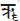
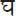
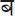
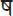

Guide To Sanskrit Pronunciation
To facilitate correct pronunciation we have used the International System of transliteration for the Sūtras, as well as for the words in the glossary. When used within the text of the commentary, Sanskrit words have been given a more phonetic spelling for ease in reading.
The Sanskrit letters are arranged in sequence according to their origin when spoken: throat, palate, roof of mouth, teeth and lips. Given below are the letters of the Sanskrit Devanagari script, the letters and diacritical marks used to represent their sounds in this book and some examples of those sounds in English.
Vowels:
| a | as in up, soda | |
| -a | as in father | |
| i | as in fll, pin | |
| -i | as in feed | |
| u | as in full, bush | |
| -u | as in fool, rule | |
| r. | as in Christmas (but not pronouncing the “i”) | |
|  | -r. | as r., (but held twice as long) |
| l. | as in slur (but not pronouncing the “l”) |
Please note: the letters ṛ, ṝ and ḷ are vowels, and are not to be confused with the consonants r and l.
| e | as in they, pray (always long) | |
| ai | as in aisle | |
| o | as in go | |
| au | as in how | |
| .m | as in hum | |
| h. | is a fnal sound pronounced with a stronger puf of air and the suggestion of the vowel preceding it. For example, a h. sounds like aha; ih. like ihi. |
Consonants:
| k | as in seek | |
| kh | as in back-hand | |
| g | as in good | |
|  | gh | as in dig-hard |
| .n | as in sing, monkey | |
| c | as in pitch | |
| ch | as in Church-hill | |
| j | as in joy | |
| jh | as in hedge-hog | |
| ñ | as in canyon | |
| t. | as in tub | |
| t.h | as in hit-hard | |
| d. | as in deer | |
| d.h | as in red-hot | |
 |
n. | as in not |
| t | as in pat (with the tongue touching the back of the teeth) | |
| th | as in hit-hard (with the tongue touching the back of the teeth) | |
| d | as in dense (with the tongue touching the back of the teeth) | |
| dh | as in red-hot (with the tongue touching the back of the teeth) | |
| n | as in nut | |
| p | as in pin | |
| ph | as in up-hill | |
|  | b | as in bird |
| bh | as in abhor | |
| m | as in mud | |
| y | as in yes | |
| r | as in ladder (when said quickly) | |
| l | as in light | |
| v | as in voice | |
 |
s | as in sun |
| s’ | as in shun (with the top of the tongue against the palate) | |
|  | s. | as in sure (with the tongue pulled back and the tip touching the ridge of the back of teeth) |
| h | as in honey |
The syllable jña commonly occurs in Sanskrit. It sounds more or less like gnya.
The vowels and consonants are pronounced the same whenever they appear in a word. Each syllable of a word is stressed equally, with the long vowels held twice as long as the short. Because each short and long vowel is a different letter in Sanskrit, it is important to pronounce them correctly. Mispronunciation changes the Sanskrit spelling, making another word with another meaning. For example, rājā (long “a”) means king, while raja (short “a”) means dust.